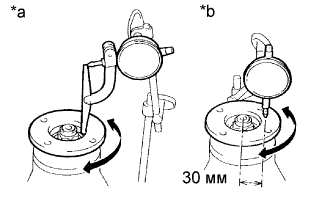
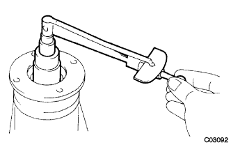
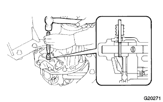
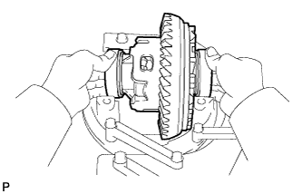

ЧАШКА ЗАДНЕГО ДИФФЕРЕНЦИАЛА В СБОРЕ (для моделей с блокировкой дифференциала) > РАЗБОРКА |
| 1. ЗАФИКСИРУЙТЕ ЧАШКУ ЗАДНЕГО ДИФФЕРЕНЦИАЛА В СБОРЕ НА МЕСТЕ |
Закрепите чашку заднего дифференциала в сборе в приспособлении для переборки.
| 2. ПРОВЕРЬТЕ ЗАДНИЙ СОЕДИНИТЕЛЬНЫЙ ФЛАНЕЦ ЗАДНЕЙ ВЕДУЩЕЙ ШЕСТЕРНИ В СБОРЕ |
|  |
С помощью индикатора часового типа измерьте биение соединительного фланца по вертикали и горизонтали.
| Параметр / Устройство | Заданные условия |
| Вертикальное биение | 0,14 мм (0,00551 дюйма) |
| Горизонтальное биение | 0,14 мм (0,00551 дюйма) |
| *a | Вертикальное биение |
| *b | Горизонтальное биение |
| 3. ПРОВЕРЬТЕ БИЕНИЕ КОРОННОЙ ШЕСТЕРНИ ДИФФЕРЕНЦИАЛА |
 |
С помощью индикатора часового типа проверьте биения зубчатого венца.
| 4. ПРОВЕРЬТЕ БОКОВОЙ ЗАЗОР МЕЖДУ ЗУБЬЯМИ В ГЛАВНОЙ ПЕРЕДАЧЕ ДИФФЕРЕНЦИАЛА |
 |
С помощью индикатора часового типа проверьте боковой зазор между зубьями в главной передаче.
| 5. ПРОВЕРЬТЕ ПРЕДНАТЯГ ВЕДУЩЕЙ ШЕСТЕРНИ ДИФФЕРЕНЦИАЛА |
|  |
С помощью динамометрического ключа измерьте преднатяг для зазора между ведущей и коронной шестернями.
| 6. ПРОВЕРЬТЕ СУММАРНЫЙ ПРЕДНАТЯГ |
С помощью динамометрического ключа измерьте преднатяг в положении касания зубьев ведущей и коронной шестерен.
С помощью динамометрического ключа измерьте суммарный преднатяг.
| 7. СНИМИТЕ ПРИВОД ПЕРЕКЛЮЧЕНИЯ БЛОКИРОВКИ ДИФФЕРЕНЦИАЛА |
Выверните 4 болта и снимите привод с чашки дифференциала.
Снимите кольцевое уплотнение.
| 8. СНИМИТЕ ИНДИКАТОР-ПЕРЕКЛЮЧАТЕЛЬ БЛОКИРОВКИ ДИФФЕРЕНЦИАЛА |
Снимите индикатор-переключатель и прокладку.
| 9. СНИМИТЕ СТЕРЖЕНЬ ВИЛКИ ПЕРЕКЛЮЧЕНИЯ БЛОКИРОВКИ ЗАДНЕГО ДИФФЕРЕНЦИАЛА |
С помощью шестигранной головки 6 мм отверните 2 резьбовых пробки.
Снимите гнездо пружины, пружину и шарик.
|  |
Используя бородок с тонким цилиндрическим концом 5 мм и молоток, выбейте разрезной штифт.
Выверните 2 болта из упора стержня.
С помощью молотка с пластмассовым покрытием снимите упор стержня.
Снимите стержень вилки переключения.
Снимите втулку блокировки заднего дифференциала.
| 10. СНИМИТЕ ГАЙКУ ЗАДНЕЙ ВЕДУЩЕЙ ШЕСТЕРНИ |
С помощью SST и молотка освободите накерненную часть гайки.
Зафиксируйте соединительный фланец ведущей шестерни с помощью SST.
С помощью торцевого ключа с головкой 30 мм отверните гайку задней ведущей шестерни.
| 11. СНИМИТЕ ЗАДНИЙ СОЕДИНИТЕЛЬНЫЙ ФЛАНЕЦ ЗАДНЕЙ ВЕДУЩЕЙ ШЕСТЕРНИ В СБОРЕ |
С помощью SST снимите соединительный фланец ведущей шестерни.
| 12. СНИМИТЕ САЛЬНИК ЧАШКИ ЗАДНЕГО ДИФФЕРЕНЦИАЛА |
 |
С помощью SST снимите сальник с чашки дифференциала.
| 13. СНИМИТЕ МАСЛООТРАЖАТЕЛЬ ВЕДУЩЕЙ ШЕСТЕРНИ ЗАДНЕГО ДИФФЕРЕНЦИАЛА |
| 14. СНИМИТЕ ПЕРЕДНИЙ КОНИЧЕСКИЙ РОЛИКОВЫЙ ПОДШИПНИК ЗАДНЕЙ ВЕДУЩЕЙ ШЕСТЕРНИ (ВНУТРЕННИЙ) |
С помощью SST снимите конический роликовый подшипник ведущей шестерни с ведущей шестерни.
| 15. СНИМИТЕ ПЕРЕДНИЙ КОНИЧЕСКИЙ РОЛИКОВЫЙ ПОДШИПНИК ЗАДНЕЙ ВЕДУЩЕЙ ШЕСТЕРНИ (НАРУЖНЫЙ) |
| 16. СНИМИТЕ СТОПОР РЕГУЛИРОВОЧНОЙ ГАЙКИ ПОДШИПНИКА ЗАДНЕГО ДИФФЕРЕНЦИАЛА |
Выверните 2 болта и снимите 2 стопора регулировочных гаек подшипников заднего дифференциала.
| 17. СНИМИТЕ КОРПУС ДИФФЕРЕНЦИАЛА В СБОРЕ |
 |
Нанесите на крышку подшипника и чашку дифференциала сборочные метки.
| *a | Метка |
Выверните 4 болта и снимите 2 крышки подшипников дифференциала.
Отверните 2 регулировочных гайки.
|  |
Снимите корпус заднего дифференциала в сборе и 2 подшипника корпуса с чашки дифференциала.
| 18. СНИМИТЕ ВЕДУЩУЮ ШЕСТЕРНЮ ДИФФЕРЕНЦИАЛА |
 |
Снимите ведущую шестерню дифференциала и распорную втулку подшипника с чашки дифференциала.
| 19. СНИМИТЕ ЗАДНИЙ КОНИЧЕСКИЙ РОЛИКОВЫЙ ПОДШИПНИК ЗАДНЕЙ ВЕДУЩЕЙ ШЕСТЕРНИ (ВНУТРЕННИЙ) |
С помощью SST и пресса снимите конический роликовый подшипник ведущей шестерни с ведущей шестерни.
| 20. СНИМИТЕ ЗАДНИЙ КОНИЧЕСКИЙ РОЛИКОВЫЙ ПОДШИПНИК ЗАДНЕЙ ВЕДУЩЕЙ ШЕСТЕРНИ (НАРУЖНЫЙ) |
С помощью латунного стержня и молотка снимите задний конический роликовый подшипник с чашки.
| 21. СНИМИТЕ ПЛОСКУЮ ШАЙБУ ВЕДУЩЕЙ ШЕСТЕРНИ ЗАДНЕГО ДИФФЕРЕНЦИАЛА |
| 22. СНИМИТЕ КОРОННУЮ ШЕСТЕРНЮ ДИФФЕРЕНЦИАЛА |
 |
Нанесите метки на коронную шестерню и корпус дифференциала.
| *a | Метка |
С помощью отвертки и молотка раскерните стопорные пластины.
Выверните 12 установочных болтов коронной шестерни.
Обстучите коронную шестерню молотком с пластмассовым покрытием, чтобы снять ее с корпуса дифференциала.
| 23. СНИМИТЕ ПЕРЕДНИЙ КОНИЧЕСКИЙ РОЛИКОВЫЙ ПОДШИПНИК ЗАДНЕЙ ВЕДУЩЕЙ ШЕСТЕРНИ |
С помощью SST снимите передний конический роликовый подшипник с чашки.
С помощью латунного стержня и молотка снимите маслонакопительное кольцо с чашки.
| 24. ПРОВЕРЬТЕ БИЕНИЕ КОРПУСА ДИФФЕРЕНЦИАЛА В СБОРЕ |
Установите подшипник корпуса заднего дифференциала в корпус дифференциала.
Установите корпус дифференциала в чашку дифференциала.
Установите 2 крышки подшипников на чашку дифференциала и закрепите их 4 болтами.
Проверьте биение корпуса дифференциала.
Снимите корпус дифференциала.
Снимите подшипник корпуса заднего дифференциала.
| 25. СНИМИТЕ ПОДШИПНИК КОРПУСА ЗАДНЕГО ДИФФЕРЕНЦИАЛА |
С помощью SST снимите 2 подшипника корпуса заднего дифференциала с корпуса дифференциала.
| 26. РАЗБОРКА КОРПУСА ДИФФЕРЕНЦИАЛА |
Нанесите метки на левый и правый корпусы.
| *a | Метка |
Выверните 8 болтов.
 |
С помощью молотка с пластмассовым покрытием отсоедините правый и левый корпусы.
 |
Снимите с корпуса дифференциала детали, показанные на рисунке.
| *1 | Полуосевая шестерня |
| *2 | Упорная шайба полуосевой шестерни |
| *3 | Крестовина |
| *4 | Ведущая шестерня (сателлит) |
| *5 | Упорная шайба ведущей шестерни |